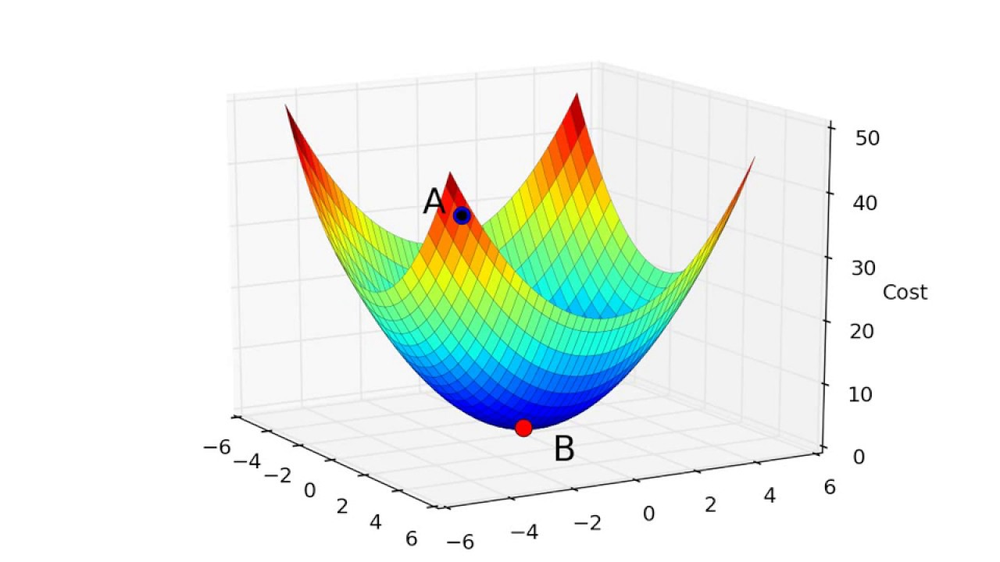

Cuerpo
Selecciona cada argumento para expandir su desarrollo
En primer lugar, a diferencia de los seres humanos, la inteligencia artificial existe en un plano completamente distinto al mundo físico. Los seres humanos están en constante interacción con su entorno: sienten hambre, experimentan el cansancio del sueño, perciben el calor del sol o el frío de la lluvia que los obliga a escamparse. Cada una de estas experiencias, por cotidiana que parezca, genera en ellos una respuesta emocional inevitable. Puntualmente, en 'Foundations of experimental psychology' se menciona que el sentir se deriva de fenómenos observables y/o estímulos con el externo (Nafe, 1929). En contraposición con lo anterior, y como define Margaret A. Boden en su texto 'AI, its nature and future', la Inteligencia Artificial es una máquina virtual, es decir, que existe de una forma no tangible, impidiendo que esta pueda tener contacto con estímulos externos de la misma forma en como el humano lo hace, pues este último tiene organos sensoriales que le permiten esto (Boden, 2016). Por lo tanto, la forma en como la IA puede llegar a comunicarse con el exterior es distinta a cómo lo logra hacer una persona. Mientras por un lado la IA interpreta el mundo exterior por medio de parámetros dados por un computador, el artista se comunica al exterior con su propio cuerpo.
Ahora bien, es importante notar que en muchas situaciones la inspiración del artista es una consecuencia de una experiencia empírica externa que ha tenido con el ambiente. Un ejemplo de esto se presenta a continuación, en donde se observa la pintura del bisonte magdaleniense, figura del arte rupestre del paleolítico:

Justamente, una de las primeras formas de arte llegó a ser por medio de experiencias personales que los cazadores llegaban a tener en su día a día, retratando sus vivencias diarias en los muros de las cuevas. Esta misma lógica se puede extender a otras formas de expresión artística: un poeta que contempla un amanecer y siente la necesidad de capturar ese momento en palabras; un músico que transforma el dolor de una pérdida en una melodía; un pintor que plasma en su pintura la angustia o la alegría por una experiencia vivida. En este sentido, la inteligencia artificial no podría ser artista en el mismo significado y forma en que lo ha sido el ser humano.
Por otro lado, algunas personas podrían decir que la IA sí puede llegar a tener sentimientos de la misma forma en cómo lo hace el ser humano. Sin embargo, y como lo muestra el artículo 'If AI only had a heart: Why artificial intelligence research needs to take emotions more seriously', las emociones que puede llegar a tener van a ser simples órdenes que sus programadores le impondrían (Merriam, 2022). Precisamente, uno de los factores importantes al momento de hablar del funcionamiento de la inteligencia artificial es el concepto de 'Descenso de Gradiente', el cual se basa en pasarle una serie de parámetros a una función de programación que va a arrojar un resultado, que es finalmente la respuesta que va a dar la Inteligencia artificial (IBM, s.f.) . Por lo tanto, si se vuelve a aplicar el concepto de “descenso de gradiente” al ámbito de las emociones, ocurriría algo similar: se estaría programando a la inteligencia artificial para sentir o actuar de una manera específica ante determinadas situaciones. Es decir, sus respuestas emocionales no surgirían de una experiencia propia o espontánea, sino de un proceso previamente definido que le indica cómo reaccionar cuando ocurre algo en particular.

Esto llevaría a una conclusión: que la IA pueda simular tener sentimientos, más no poder sentir de la misma forma en que lo hace el ser humano. En consecuencia, no podría generar arte por sí sola, sino que necesitaría la intervención de un agente externo (el artista) que le proporcione la intención, la experiencia o la inspiración, usándola finalmente como una herramienta.
Por otro lado, la inteligencia artificial ha demostrado ser capaz de generar imágenes a partir de la gran cantidad de datos a los que puede acceder. Basta pensar en el modelo Gemini Nano Banana 3 que, a partir de una instrucción (prompt), es capaz de producir una imagen completamente nueva. Sin embargo, ahí radica la cuestión: una persona que no sepa elaborar un buen prompt (o que carezca de conocimientos artísticos) difícilmente podría generar una gran obra artística únicamente mediante el uso de IA. Relacionado con esto último, en la página de Art Madrid: Feria de arte contemporáneo se presenta cómo un artista pudo vender una obra realizada con inteligencia artificial llamada 'Portrait of Edmond de Belamy' en 2018 vendida por 380.000 euros. Asimismo, y cómo continua exponiendo el mismo artículo:

De esta manera, se pone en evidencia que la IA, más allá de ser una generadora de arte por sí misma, funciona principalmente como una herramienta al servicio del artista. Por lo tanto, aunque no se puede negar su papel en la creación de un nuevo medio de expresión, resulta mejor entenderla no como un creador autónomo por sí misma, sino como un recurso que el artista utiliza para desarrollar su propia propuesta artística. Complementando lo anterior se encuentra el caso de una amiga estudiante de Artes en la Universidad del Rosario, que explica cómo le han llegado a explicar y sugerir el uso de inteligencia artificial en alguna de sus materias como una herramienta para producir medios artísticos. En el audio adjunto se presenta la breve entrevista hecha a la estudiante Laura.
Un último aspecto que refuerza la idea de la inteligencia artificial como herramienta del artista, y no como una entidad creadora por sí misma, es que, en los últimos años, ha comenzado a utilizarse también como generadora de otro tipo de arte: la música. Ejemplificando lo anterior se encuentra el caso del video de YouTube hecho por Kirt Connor, que le pidió a la IA que le generara la letra de una canción al estilo de la banda de rock AC/DC, obteniendo el siguiente resultado:
▶ Ver: Canción de AC/DC generada con IA
Otro caso es el ya conocido de Flow GPT que creó una canción en 2023 llamada NostalgIA en donde se presentaban las voces de algunos cantantes tales como Justin Bieber o Bad Bunny, lo cual generó bastante revuelo, pues llegó a molestar al mismo Bad Bunny en redes sociales al haber utilizado su voz sin su consentimiento.
▶ Ver: Canción de Bad Bunny con IA (NostalgIA)
Sin embargo, ambos ejemplos anteriores vuelven a mostrar un aspecto, y es el de la inteligencia artificial cómo herramienta del artista que quiere crear arte. Precisamente, y como se menciona en Art Madrid:
Adicionalmente, y complementando lo anterior, el mismo Google define la IA cómo un sistema que aprende con base en una gran cantidad de datos, y que a partir de estos, inicia a realizar predicciones y crear modelos (Google Cloud, s.f.).
Por lo tanto, y ejemplificando lo anterior, es como si antes de que existiera Michael Jackson, se le pidiera a la IA crear una canción de rock/pop, a lo cual crearía algo basado en los géneros del momento, sin poder anticipar el estilo de Michael Jackson, pues esos datos aún no existen. Precisamente, solo sería hasta cuando naciera Michael Jackson y sus obras se registran que la IA podría replicar su estilo.